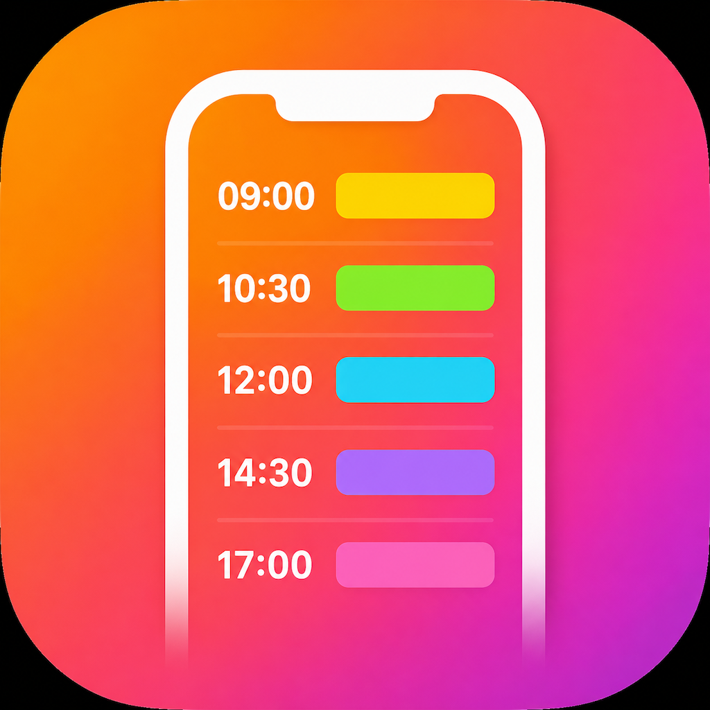
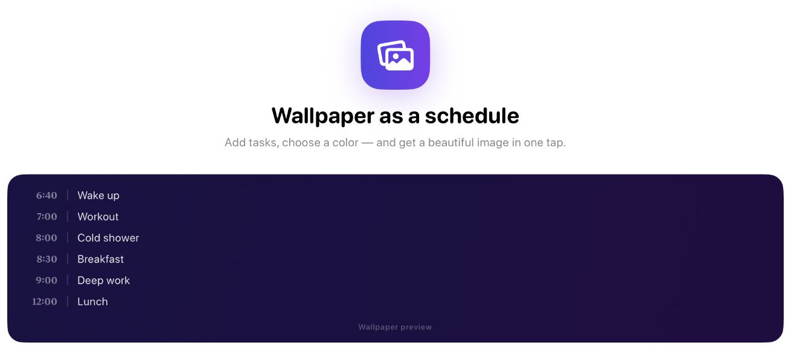

Daily Routine & Reminders
Download on the App Store
Schedule Wallpaper Planner helps you stay organized by placing your daily routine directly on your iPhone or iPad wallpaper. Every time you unlock your device, your plan is right in front of you.
Create a schedule, generate a wallpaper instantly, and receive reminders exactly when you need them. Your daily plan becomes part of your lock screen or home screen, making it easier to stay focused and productive throughout the day.
A schedule wallpaper is a wallpaper that displays your daily plan, routine, tasks, and important activities directly on your phone screen. Instead of opening a planner, calendar, or productivity app multiple times a day, your schedule is always visible whenever you unlock your iPhone or iPad.
Schedule Wallpaper Planner makes it easy to create a personalized daily routine wallpaper in just a few seconds. Simply enter your activities, choose the time for each event, and generate a wallpaper that helps you stay focused throughout the day.
Many people struggle to follow a daily routine because traditional planners and task managers stay hidden inside apps. A wallpaper planner works differently. Since your schedule is displayed directly on your lock screen or home screen, you naturally see your plan dozens of times every day.
The app is perfect for students, professionals, entrepreneurs, remote workers, and anyone who wants to improve productivity. Whether you use time blocking, a morning routine, a study schedule, a work schedule, or a personal productivity system, Schedule Wallpaper Planner helps you stay organized and focused.
In addition to creating a schedule wallpaper, the app can send reminders and notifications for important activities. This combination of a visible daily planner and timely reminders helps you build better habits, reduce distractions, and achieve your goals more consistently.
If you are looking for a daily routine planner, productivity wallpaper, schedule planner, timetable organizer, reminder app, or routine wallpaper creator for iPhone and iPad, Schedule Wallpaper Planner provides a simple and effective solution.